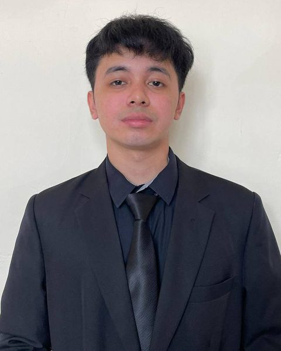

bijaklabur.my
Tentang SiswaCap
SiswaCap ialah laman web dan app percuma untuk belajar melabur saham dan kripto di Moomoo secara patuh syariah, memantau harga pasaran masa nyata, menyemak waktu solat seluruh Malaysia dan menyemak kertas kerja pelajar.
Pengasas
SiswaCap diasaskan oleh dua pelajar Ijazah Sarjana Muda Pengurusan Industri Halal (IC220) di Universiti Teknologi MARA (UiTM).

Untuk pertanyaan umum, kerjasama atau iklan, emel hello@bijaklabur.my.
Kenapa kami bina SiswaCap
Sebagai pelajar Pengurusan Industri Halal, kami belajar bahawa halal bukan sekadar makanan. Ia juga cara kita mencari rezeki, mengurus wang dan menjalani hari. Ramai rakan pelajar mahu mula melabur, namun keliru antara saham patuh syariah, riba dan spekulasi, dan maklumat yang betul pula berselerak di banyak tempat. Jadi kami himpunkan semuanya dalam satu app percuma.
Apa yang ada di SiswaCap
- Belajar melabur: asas saham dan kripto, cara guna Moomoo, dan panduan syariah.
- Harga pasaran masa nyata: saham dan kripto dengan carta langsung.
- Tanya AI Fiqh: jawapan soalan fiqh yang hanya bersandarkan 13 kitab muktabar (mazhab Syafie dan perbandingan mazhab), Al-Quran, hadis dan keputusan fatwa rasmi Malaysia, dengan gambar muka surat kitab yang dipetik.
- Waktu solat seluruh Malaysia dan dunia: semua zon rasmi, arah kiblat dan ciri ibadah.
- Jadual kelas UiTM: jadual kelas pelajar dan wallpaper skrin kunci jadual mingguan.
- Penyemak kertas kerja: anggaran peratus tulisan AI, peratus plagiat dan cadangan pembetulan.
Soalan lazim
Apakah SiswaCap (bijaklabur.my)?
SiswaCap ialah laman web dan app percuma yang dibina oleh pelajar UiTM untuk pelajar dan orang awam Malaysia: belajar melabur secara patuh syariah, bertanya soalan fiqh berasaskan kitab muktabar, menyemak waktu solat dan mengurus jadual kelas UiTM.
Adakah SiswaCap berkaitan dengan Suruhanjaya Sekuriti Malaysia?
Tidak. SiswaCap di bijaklabur.my ialah projek bebas oleh dua pelajar UiTM dan tidak berkaitan dengan inisiatif pendidikan pelabur "BijakLabur" atau InvestSmart® oleh Suruhanjaya Sekuriti Malaysia (SC). Untuk menyemak sama ada sesuatu pelaburan atau syarikat dilesenkan, rujuk laman rasmi SC di sc.com.my.
Adakah SiswaCap percuma?
Ya. Semua ciri utama boleh digunakan secara percuma di laman web dan app.
Dari mana Tanya AI Fiqh mendapat jawapannya?
Tanya AI hanya boleh memetik sumber yang telah disemak: kitab muktabar seperti Fath al-Qarib, Minhaj al-Talibin, Mughni al-Muhtaj dan Al-Fiqh al-Manhaji, ayat Al-Quran, hadis, serta keputusan Muzakarah Jawatankuasa Fatwa Kebangsaan, Majlis Penasihat Syariah SC dan BNM. Setiap petikan disemak dengan teks sumber, dan jika tiada sumber yang sah, AI menjawab "tidak pasti" serta mencadangkan pengguna merujuk Jabatan Mufti.